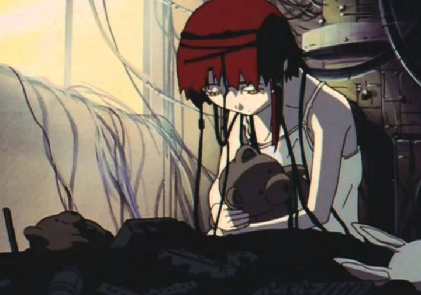

Every now and then you see a show that seems to transcend every other show in the market. But sometimes you see a film or series that is even greater than that. Something so clever and intriguing that it actually becomes harder for you to grasp, despite knowing deep down that it is nothing less than a masterpiece. Such a case is a show made back in 1998, called "Serial Experiments Lain.""Serial Experiments Lain" is a strange show that deals with identity, meaning of life, God, reality, friendship, family, and connecting to others, all in only 13 episodes. Part of what makes the series strange is that almost every episode seems to deal with its own substory, making the series episodic in some way. But it all connects by revolving around Lain and her adventures in the Wired. Lain starts off as a young schoolgirl who doesn't really talk or communicate with others much, but upon hearing that a girl that committed suicide was sending emails to classmates, she suddenly becomes interested in using her Navi to find out more. She learns that the Wired is far greater than anyone had thought, and that she seems to have greater powers than she ever knew. The show focuses on her slowly becoming more and more connected to the Wired, and finding out more about who she really is. If my description sounded a little confusing, replace "Wired" with "Internet" and "Navi" with "Computer," and you get the idea. It is a little strange that different names were used, but it also makes this show more relevant no matter how times change. Remember that this show was made in 1998, a time when most people only had dial-up internet. This is where the incredible genius of the show is shown, where it predicts things that have become parallel to reality, and it makes this show surprisingly relevant despite its age. The episodes at the beginning seem well realized, although they barely connect to each other at first. It's not until the later episodes when events become more relevant to the overarching plot, and when secrets are revealed as ideas that open your mind in new and fascinating ways. It sounds like "Serial Experiments Lain" is worthy of its classic status, and it really is. Everyone should see it. However, not everyone will be entertained. You might spend too much time think whether or not the genre is horror, sci-fi, thriller, mystery, or surreal abstraction. The individual episodes might be slower than you'd want, and the payoff won't come in until you've invested a lot of time. Each episode will leave you staring blankly at the screen when the credits roll, and you will wonder what the purpose of watching it all was. You may question if certain themes were spelled out too much, or if others were too subtle. And I don't say this often, but even I found the show to be a little confusing. Yes, some answers are provided at the end, but some questions are still left open for you to think about. It isn't until you spend time thinking after the show is over that you realize how great it was, but the payoff doesn't come until then, and you have to question yourself first if it will be worth watching. It is, but will you believe me? There's nothing else quite like it, and there's good reason for that: if many shows had the reputation this show does, there would be no reaso nto watch it. I think I had fun watching it purely for the amazement of what I was watching, and trying to figure out the puzzle in my dreams days after watching an episode... but this isn't necessarily fun for everyone. Like all older shows, the visuals have aged. Very limited animation in 4:3 aspect ratio does not look good. On the other hand, character designs actually look fair, and the recent remastered version actually looks pretty sharp. Shadows are also painted with a unique technique, and overall the dated visuals won't bother you. The music is fair, especially the opening theme, which grew on me after a while. While sound design is good given the age, the English dub is pretty weak, although Japanese audio with dubs doesn't communicate the ideas as effectively. I don't remember being more torn about giving a grade to a show. This could easily deserve five stars, but I could also give it much less for being too advanced in its ideas for anyone to understand. Thinking back on it, I think "Serial Experiments Lain" is genius, but that's not what I thought while I was watching. While it became more relevant decades after its creation, I can't help but wonder if it will become even more relevant and impactful years into the future. Is this entertaining? No. Is it meaningful? Maybe. Is it a masterpiece? Yes. Should you watch it? It's up to you.
- "Ani" More reviews can be found at : https://2danicritic.github.io/ Previous review: review_Senran_Kagura_-_Ninja_Flash! Next review: review_Shimoneta_-_A_Boring_World_Where_the_Concept_of_Dirty_Jokes_Doesn't_Exist